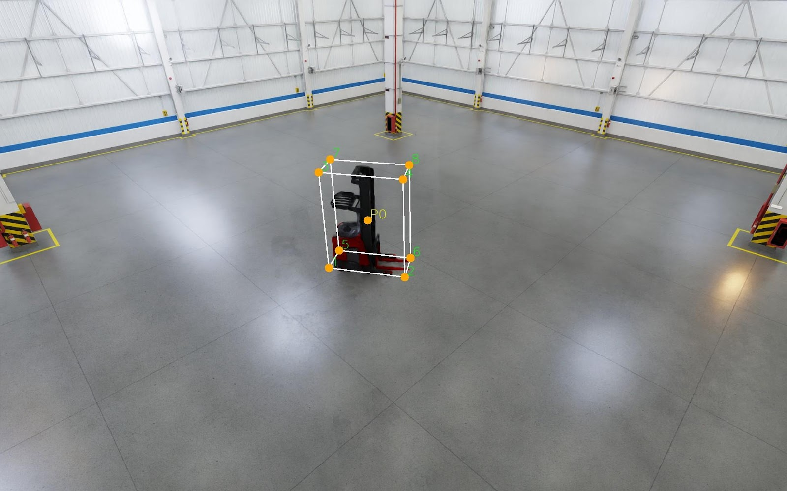

Leading the RL engineering team and
directing production deployment, while developing
TACT-ful and CompliantWBC and mentoring 8 interns across
locomotion policy design, sim-to-real transfer, and reward
engineering.
Senior Reinforcement Learning
Engineer
12/2025 – 03/2026
Built and cross-validated multi-physics
simulation environments (PhysX, MuJoCo, Newton/Warp) and
high-throughput distributed GPU RL training pipelines,
working with hardware and controls teams to keep policies
compatible with real joint controllers, torque limits, and
safety constraints.
R&D Software Engineer, Reinforcement
Learning
06/2025 – 11/2025
Trained RL policies for humanoid
locomotion in Isaac Gym and Isaac Lab, using event-driven
gait initialization and curriculum learning to reach stable
walking, disturbance recovery, and adaptive balancing on
hardware.
University of Pennsylvania Philadelphia, USA
Research Assistant
05/2024 – 05/2025
Generated 1M+ synthetic images in NVIDIA
Omniverse and improved multi-view pose estimation by 40%
through combined synthetic and real-data fine-tuning,
enabling perception models accurate to within 30 cm in real
warehouse environments.
Ho Chi Minh City University of Technology
(HCMUT–VNU) Vietnam
BEng in Mechatronic Engineering,
summa cum laude
Thesis: Integration of an Industrial Robot
with a 3D Scanning Stereo Vision System Using Gray Code and
Phase Shift
Awards & Scholarships
Vingroup Scholar University of Pennsylvania
Valedictorian & Excellent Thesis Award
HCMUT–VNU
Panasonic Scholar
Saigon Hi-tech Park Business Association (SBA) Scholar
KSYS-CUBE Scholar
Projects

RetroLifts
Infrastructure-Based Autonomous Forklift
System
Infrastructure-mounted perception combining BEV global
localization with FPV local planning to cut onboard sensing
and compute needs, with multi-camera calibration and
simulation for motion planning and collision checking.
Interactive Computer Graphics, University of
Pennsylvania
Real-time 3D voxel rendering engine in C++ with a custom
OpenGL pipeline, chunk-based procedural terrain, and GLSL
shaders for dynamic lighting, shadows, and physically-based
materials.
Stable Diffusion 3 Visualization
Advanced Topics in Machine Perception,
University of Pennsylvania
Visualized Stable Diffusion 3's internal attention
structure using Normalized Cuts.